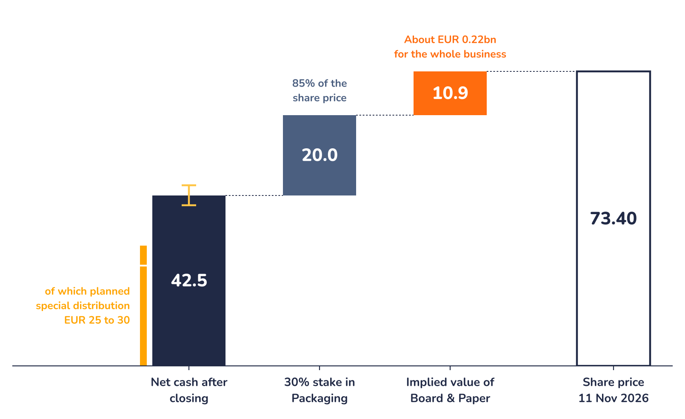

Is the share cheap?

| EUR per share | Low | Mid | High |
|---|---|---|---|
| Net cash after closing | 40.0 | 42.5 | 45.0 |
| 30% stake in Packaging | 20.0 | 20.0 | 20.0 |
| Cash and stake | 60.0 | 62.5 | 65.0 |
| Share price | 74.10 | 74.10 | 74.10 |
| Implied Board & Paper | 14.1 | 11.6 | 9.1 |
| In EUR bn | 0.28 | 0.23 | 0.18 |
| Times 2025 EBITDA | 2.0x | 1.7x | 1.3x |
Method: net cash guided by MM after closing (EUR 0.8 to 0.9bn, before the special distribution), plus the 30% stake at the EUR 0.4bn MM is investing, divided by about 20m shares. The remainder is what the share price implies for Board & Paper. If the stake is cut to 20%, its value falls by about EUR 7 per share.
Why the distribution itself is not the opportunity
The EUR 25 to 30 per share will be paid out of cash that is already counted in the share price. On the ex-date the price should fall by roughly the same amount, so an investor who buys only for the distribution gains nothing on paper. The return comes from what is left: about EUR 15 per share of cash kept by MM, the 30% stake, and Board & Paper.
A dividend bears 27.5% Austrian withholding tax, of which 12.5 points can be reclaimed under the Austria and Switzerland tax treaty, leaving 15%. A repayment of capital out of capital reserves would in principle not bear Austrian withholding tax. Management says the form is still open. Investors should check their own situation with a tax adviser.